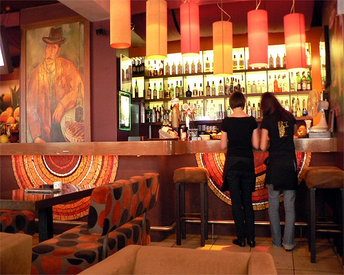
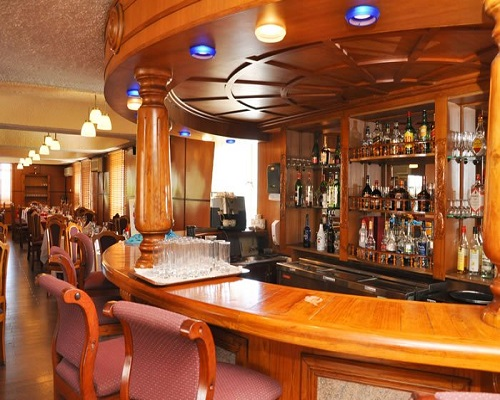
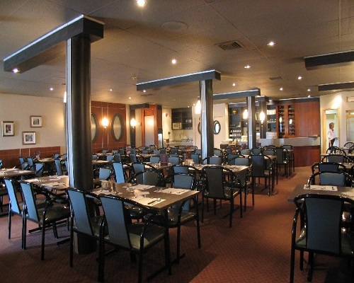
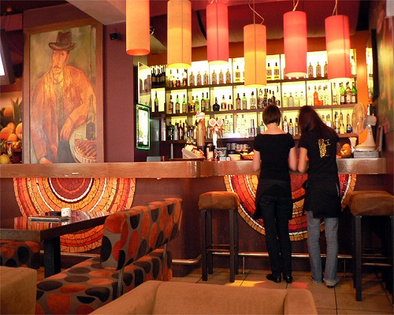
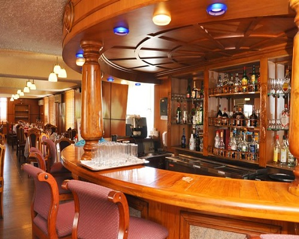
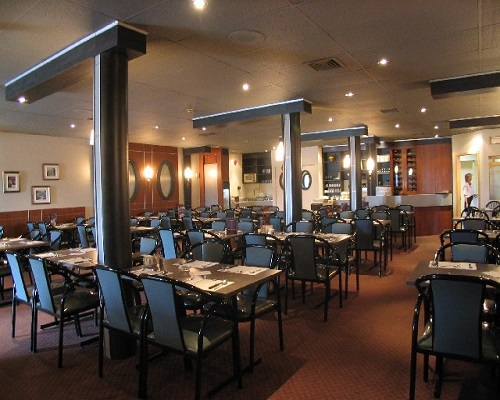

The majority of the food in our menu is produced on the premises. Designed to offer something for everyone the menu has dishes that range from £2.95 to £16.95 for main courses with a choice of starters and desserts if required. let us invite you to indulge in a charming and intimate dining experience with non-pretentious menus that are composed solely to impress the customers who eat them not just the other chefs who read them! From having a break from work and eating from our new Lunch menus to relaxing outside in the sun drinking coffee enjoying a croissant watching the world go by to our exquisite evening A La Cate diners you will have an experience to remember.
 




